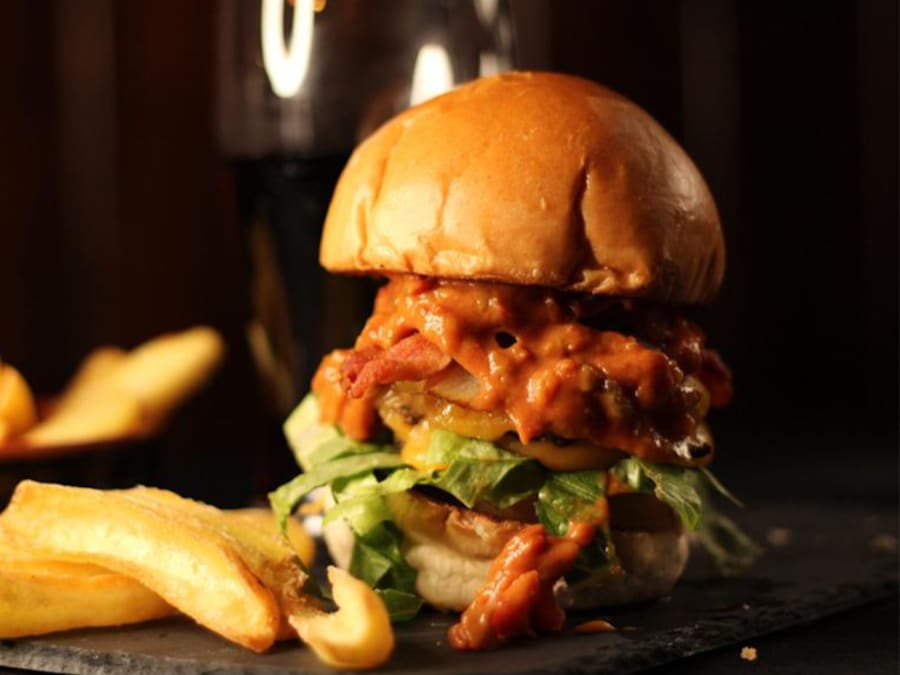
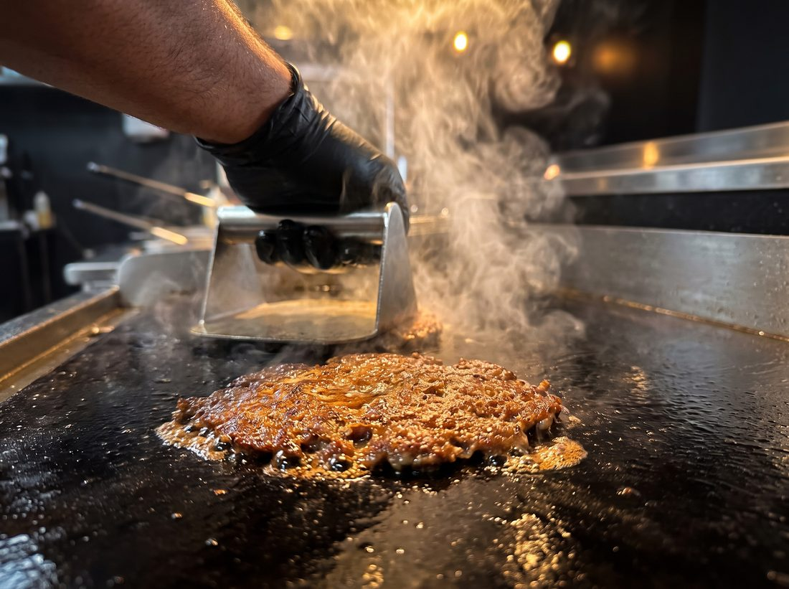
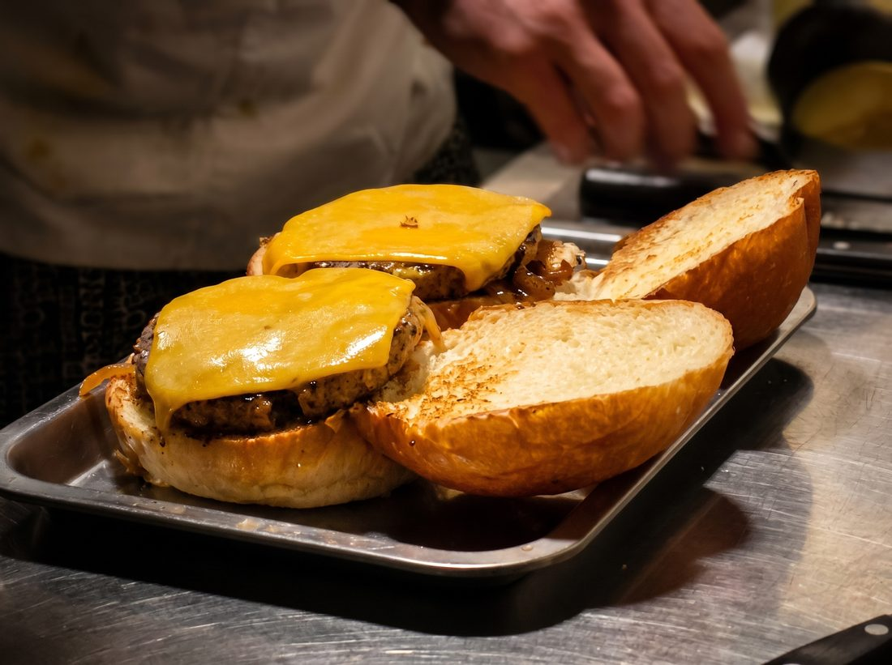
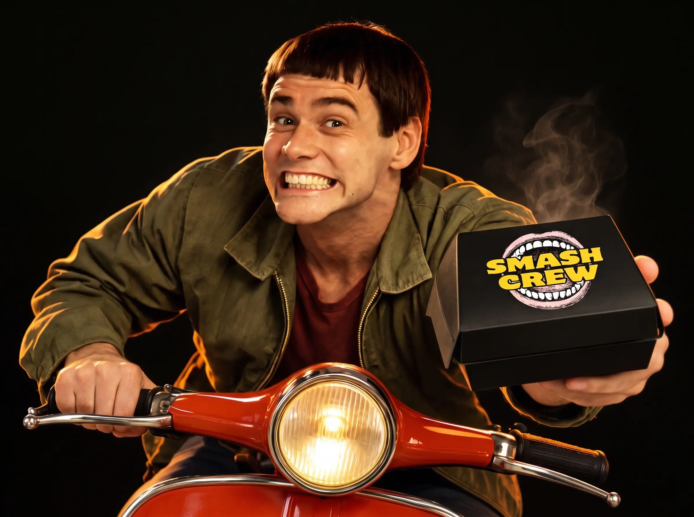

Best SellerSmash Crew Special
Bun, doppio patty di carne, doppio cheddar, bacon croccante, cipolla alla piastra, insalata, pomodoro e salsa special
€11,00

Fuori crosta, dentro succo Macinata ogni giorno. Schiacciata sulla piastra. Mai congelata, zero compromessi.

IL GUSTO PARTE DA QUI

Ordina in delivery oppure passa a ritirare in sede: lo smash parte solo quando lo chiedi.
Vieni a trovarci
Il nostro bancone è a Civitanova Marche: piastra sempre accesa e smash che parte solo quando lo chiedi